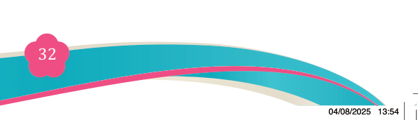
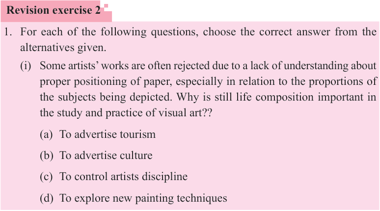
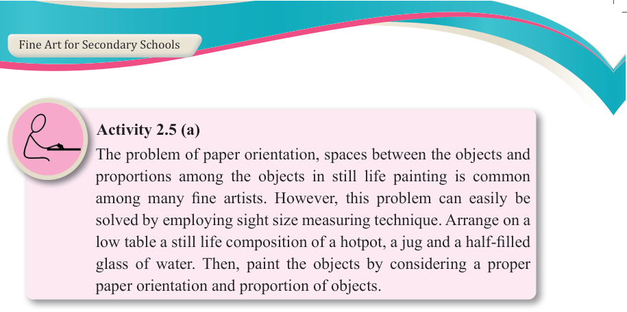
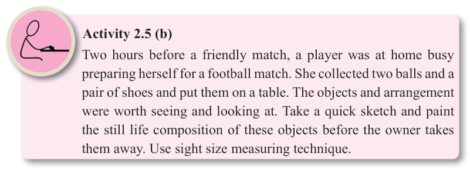

Fine Art for Secondary Schools

32

Student’s Book Form Two



Activity 2.5 (a)
The problem of paper orientation, spaces between the objects and proportions among the objects in still life painting is common among many fine artists. However, this problem can easily be solved by employing sight size measuring technique. Arrange on a

low table a still life composition of a hotpot, a jug and a half-filled glass of water. Then, paint the objects by considering a proper paper orientation and proportion of objects.

Activity 2.5 (b)
Two hours before a friendly match, a player was at home busy preparing herself for a football match. She collected two balls and a pair of shoes and put them on a table. The objects and arrangement were worth seeing and looking at. Take a quick sketch and paint the still life composition of these objects before the owner takes them away. Use sight size measuring technique.
Revision exercise 2
1. For each of the following questions, choose the correct answer from the alternatives given.
(i) Some artists’ works are often rejected due to a lack of understanding about proper positioning of paper, especially in relation to the proportions of the subjects being depicted. Why is still life composition important in the study and practice of visual art??
(a) To advertise tourism
(b) To advertise culture
(c) To control artists discipline
(d) To explore new painting techniques
04/08/2025 13:54